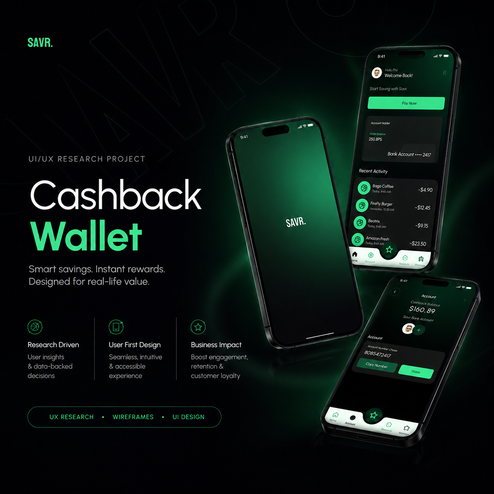

Think-Aloud Testing
Participants moved through the prototype while explaining what felt clear, confusing, risky or useful.
UX RESEARCH PROJECT
This project studies how users understand cashback inside a digital wallet. The research focused on balance clarity, reward visibility, payment confidence and whether users could trust the wallet before linking money-related accounts.

save smarter.
01 / Problem
The wallet was meant to help users save through cashback rewards, discover eligible stores, complete payments and track recent activity. The idea was useful, but testing showed that users needed stronger clarity around balance, rewards, payment actions and security before they could fully trust the product.
Selected Issue
Users found the balance area, but struggled to understand what money was available, what was cashback and when rewards would actually be applied.
02 / Research Approach
The study focused on real wallet moments: checking cashback, finding offers, paying, linking accounts and understanding rewards after a transaction.
Participants moved through the prototype while explaining what felt clear, confusing, risky or useful.
I looked at where users hesitated, what they missed and what actions they expected to be easier.
Issues were grouped by impact so the redesign could focus on cashback clarity, Pay Now visibility and store discovery.
Interactive Research Lab
Users could find the balance, but needed clearer separation between wallet balance, cashback balance and pending rewards.
03 / Reward Clarity
The redesign direction makes cashback visible before payment, confirms it after payment and separates reward money from regular balance so the user does not have to guess.
Users could see numbers, but they did not always know which amount was spendable, pending or earned as cashback.
estimated cashback on a $50 purchase
04 / Store Discovery
8% cashback
0.3 mi away5% cashback
Open now12% cashback
Limited offer3% cashback
Instant creditUsability Signal
High Severity
High Severity
High Severity
Medium Severity
05 / Key Findings
Active Finding
Users needed a clearer split between wallet balance and cashback balance so they could understand what money they had and what rewards were earned.
06 / Redesign Decisions
Users could not quickly tell what was wallet money, cashback or pending reward value.
After → Split wallet balance and cashback into clear cards.Users missed nearby cashback opportunities because discovery did not feel like a main feature.
After → Add store discovery to navigation with search and filters.The payment button was not where users expected it, creating hesitation at checkout.
After → Move Pay Now to the homepage as a visible CTA.Users did not know whether they earned cashback after completing a transaction.
After → Show cashback credits inside Recent Activity.07 / Wallet Journey
User sees nearby cashback stores clearly.
Pay Now is visible without hunting.
Cashback confirmation appears after payment.
Reward history motivates repeat use.
08 / Future Work
Compare the old and redesigned interface using task completion time, error rates and satisfaction.
Suggest deals based on spending patterns, store preference and location.
Add clearer bank-linking reassurance, biometric login and safe verification options.
Show cashback trends, spending insights and progress toward rewards.
09 / Final Takeaway
The redesign focused on making rewards visible at the right moment: before payment, during store discovery and after transactions. The biggest UX lesson was that financial interfaces should not make users guess. They should make money states obvious.